오감도는 세상을 진단하는 도구
오감도는 1934년에 발표된 연작 시로, 제목은 원래 '조감도'에서 '조'가 '오'로 잘못 표기된 것에서 비롯되었다는 설이 있습니다.
2024년 9월, GIST 연구팀은 이상의 시 <오감도>에 물리학을 접목시켜 새로운 해석법을 제시합니다.
숫자판을 원기둥으로 변환하고 도넛 형태로 읽었을 때 정상적인 수열로 해석됩니다.
도넛 내부는 우리가 사는 세상이고, 표면을 지나는 무수히 많은 선은 내부의 상태를 진단할 수 있는 도구라는 것입니다.
오감도를 그려서 우리 주변 세상을 진단해보세요!